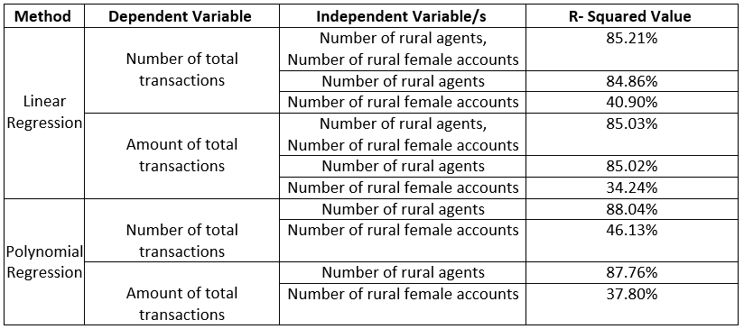
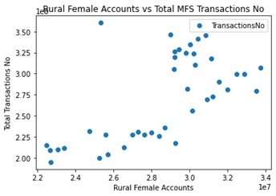
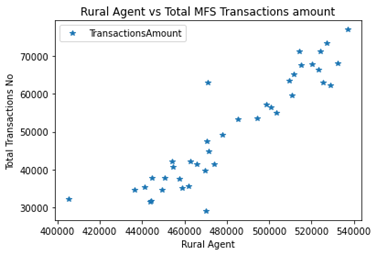
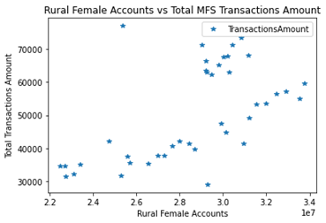

Mobile Financial Services in Bangladesh: Analyzing the Control of the Number of Rural Agents and Rural Female Accounts on the Transaction Growth
The corresponding policymakers at Bangladesh Bank and the officials of the MFS organizations always corroborate that there needs to be more agents and more female users in the rural areas of Bangladesh
to fully recognize the potential of Mobile Financial Services. To examine that notion, this project explores the effect of the number of rural agents and the number of rural female accounts on the total
number of monthly transactions conducted through MFS in Bangladesh. We want to find out the scale of control the rural agents and the female users have over the total number and volume of MFS transactions
in Bangladesh.
This is an exploratory quantitative project on MFS users’ data and MFS transactions’ data. The data have been collected from the Statistics Department of Bangladesh Bank. Two of the most common regression
models: Linear Regression and Polynomial Regression have been deployed to quantify the influences of the number of rural agents and the number of rural female users over the total number trajectory.
Three libraries have been used in the Notebook: Scikit-learn library for linear regression, Numpy for Polynomial Regression, and Matplotlib for plotting the data. The corresponding R-squared values
(coefficient of determination) found are as follows:
|

Table 1: Results of the implemented regression models.
|
|

|
|

|

|